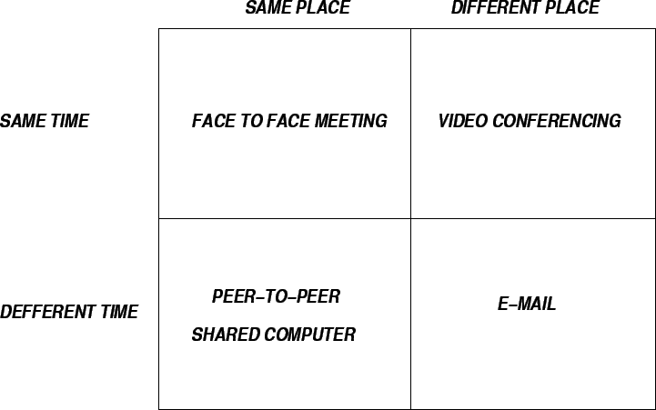

Next: E-Business
Up: E-World
Previous: Extranet
Contents
- A software helping people to collaborate (especially for geographically
distributed organizations).
- Supports to communicate ideas, cooperate in problem solving, coordinate work
flow and negotiate solutions.
- Categorized according to:
- Users working in the same place or in different locations.
- Users working together at the same time or different times.
- To consider:
- Group concepts
- How group members behave in a group setting.
Figure 9.1:
Groupware Categories
|

|
- Reasons for using:
- Works well with groups having common interests and where it is not possible
for the individuals to meet face to face.
- Some problems are better solved by group than by individuals.
- Groups bring multitude of opinions/expertise to a work setting.
- Facilitates telecommuting (time saver)
- Often faster and more effective
than face to face meetings.
- Critical prerequisites for system success:
- Compatibility of software.
- Perceived benefit to every group member.
- For a face-to face session, the protocol is standard and the communication is
highly structured.
If the communication structure is known, then a groupware can take advantage
of it to speed up the communication and improve the performance of the exchange.
This communication environment is called technologically mediated
communication structure.
- An alternative communication structure is known as a socially mediated
communication structure where the individuals send a request (e-mail) through
technology without any control over how soon or whether the recipient will
respond.
- A session represents a situation where a group of individuals agrees to
get together to conduct a meeting in person, over the telephone, or by
videoconferencing etc.
- Groupware systems require that the sessions be conducted within the
framework of protocols designed to ensure integrity, privacy and successful
completion of each session.
- Session control determines who can enter and exit the session, when they can
enter and how. Some rules used in case of session control:
- Making sure that users do not impose a session on others.
- Identifying conversational group members
before allowing them into a session.
- Controlling unnecessary interruptions or simultaneous transmissions (that
might result in chaos/confusion).
- Allowing group members to enter and exit at any time.
- Determining the maximum number of participants and the length of the
session(s).
- Ensuring accountability, anonymity and privacy during the session(s).
- Applications:
- E-mail/Knowledge
transfer
- Newsgroups/Work-Flow Systems
- Chat Rooms
- Video Communication
- Group Calendaring/Scheduling
- Knowledge Sharing
Next: E-Business
Up: E-World
Previous: Extranet
Contents
Knowledge Management Systems
2004-11-01